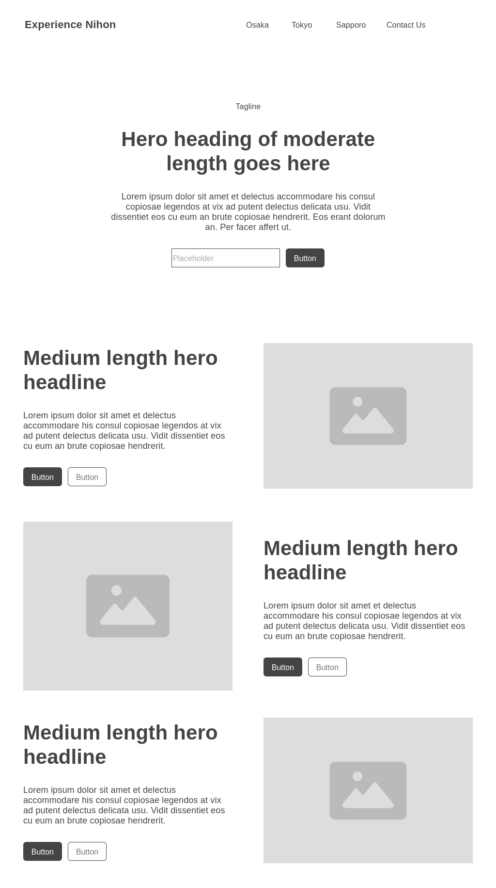

Experience Nihon
Site Purpose
The purpose of this site is to introduce visitors to teh best places to visit in Japan. This will introduce the three locations that visitors can visit, Tokyo, Osaka, and Sapporo. It will display the main locations and the current weather of each location.
Scenarios
Where are the best places to visit in Japan?
What is the weather for each location?
What are the local dishes that I should experience for each location?
Color Schema
Primary
Secondary
Accent
